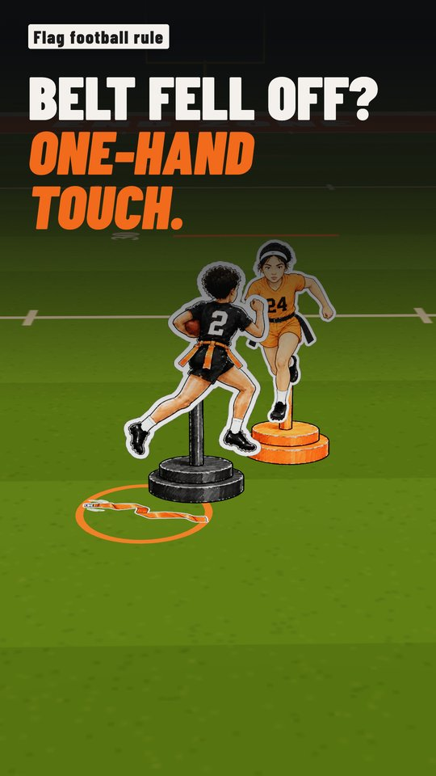
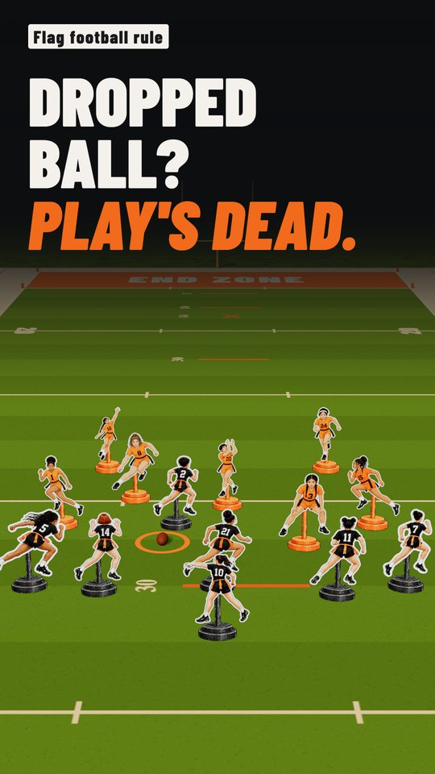
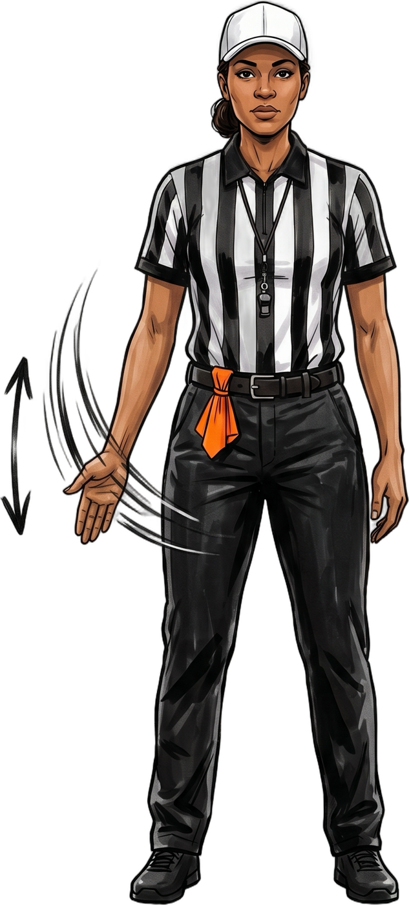
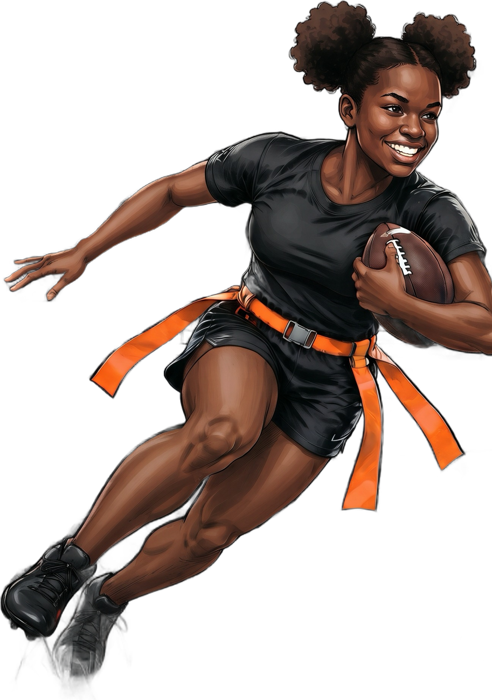

26–27Everything in this guide is based on the 2026–27 NFHS Flag Football Rules, the official rules for high school girls flag football. NFL FLAG and many youth and rec leagues use different rules, and your state can adopt a few of its own.
Two teams of seven. The offense snaps the ball and tries to run or pass it across the goal line. Instead of tackling, the defense pulls a flag off the runner's belt to end the play. The offense gets four downs to reach the next marked line, and blocking and contact aren't allowed.
If your daughter just made the team and you've never followed football, the first game can feel like everyone knows a secret you don't. They don't, really. Flag football runs on a handful of simple ideas. Here they are, in the order you'll see them on the field.
The field and the teams
It's seven against seven. The team with the ball is Team A (the offense). The other team is Team B (the defense). A team that runs out of substitutes can keep playing with as few as five. Rule 1-1-3
The goal: carry or pass the ball across the other team's goal line. 1-1-1
Your state picks one of four field sizes. A common one is 100 yards long and 40 yards wide, with a 10-yard end zone at each end. Unlike the NFL, the field is only marked every 20 yards: 20, 40, 40, 20. Those lines matter more than you'd think (see section 04). 1-2
How a play starts
There are no kickoffs. Each half starts with the ball on the offense's own 14-yard line, and every snap is made from the center of the field. 4-1-1 · 4-1-2
- 1The snap. The snapper passes the ball back. The player who takes it has to be at least 2 yards behind her. 2-12
- 2The neutral zone. A 1-yard gap between the teams. Nobody crosses it before the snap.
- 3Run, hand off or throw. But there's only one forward pass per play, thrown with both of the passer's feet behind the neutral zone. 7-5-1 · 7-3
No kickoffs
Each half starts on the offense's own 14. After a score, the other team usually starts on its own 14 too.
Pull the flag
Every player wears a belt with three flags: one on each hip and one on the tailbone. When a defender pulls the runner's flag, or the belt's clip comes apart, the play is over. That's the tackle. 2-10-2 · 4-2-2
If the belt falls off on its own, the defense ends the play with a one-hand touch between the runner's shoulders and knees.

Belt fell off?
See the one-hand touch that ends the play.
And there's no diving on loose balls. If a fumble or a pass nobody catches hits the ground, the play is dead right there. 2-1-3 · 7-4-3

No fumbles?
See why a dropped ball ends the play.

Flag guarding
The runner can't use her hand, arm or the ball to fight off a defender.
Four downs to the next line
The offense gets four tries, called downs, to reach the next marked 20- or 40-yard line. That target is the zone to gain. 5-1 · 5-3-1
Start a series on your own 26, and you're trying to reach your own 40. Make it, and you get four new downs. Fall short after four, and the other team takes over.
First down
Arm straight out, pointing toward the defense's goal. Four new downs.
Can you punt on fourth down? Yes, with a catch. Here's how punting works.
BOOKRather read it at your own pace? Every rule in this guide, plus the ones we skipped, is drawn out in Girls Flag Football, Illustrated. See the book →
Scoring
- 6Touchdown. Carry or catch the ball across the goal line. 8-1
- 1Try from the 3-yard line. One play after a touchdown. 8-3-1
- 2Try from the 10-yard line. The scoring team picks the spot.
- 2Safety. The defense pulls the runner's flag in her own end zone, and the points go to the defense.
After the try, the other team starts on its own 14-yard line. No kickoff. 8-3-9
The big one: no contact
No tackling, and no blocking. You can't push, hold or knock anyone out of the way. 9-3-1
The only legal block is a screen. The blocker steps into the defender's path first, arms in, like a screen in basketball. If the defender runs into a set screen, that's legal. If the blocker moves into the defender, it's a foul. 9-3-2

Set early, arms in
Get there first and give the defender a step or two to go around.
The clock
A high school game is four 12-minute periods, and the clock mostly keeps running. 3-1-1 In the last two minutes of each half, it stops on incomplete passes and when a runner goes out of bounds. 3-4-3
Between plays, the offense has 25 seconds to snap the ball. Halftime runs 5 to 20 minutes, depending on your state. 2-31 · 3-1-6

When the belt comes off without a defender pulling it, a one-hand touch between the shoulders and knees ends the play (Rule 4-2-2).

A trailing team can keep the ball after its try. It starts with 4th down on its own 20-yard line (Rule 8-3-9).

See every rule drawn out.
Girls Flag Football, Illustrated covers the 2026–27 NFHS rules with field diagrams, the illustrated players and all 38 referee signals, rule by rule.
Rule references are to the 2026–27 NFHS Flag Football Rules, written here in plain words. Not affiliated with or endorsed by the NFHS. Rules can change each season, and states may adopt field sizes, field goals, overtime and other options, so always check your state association's adoptions.